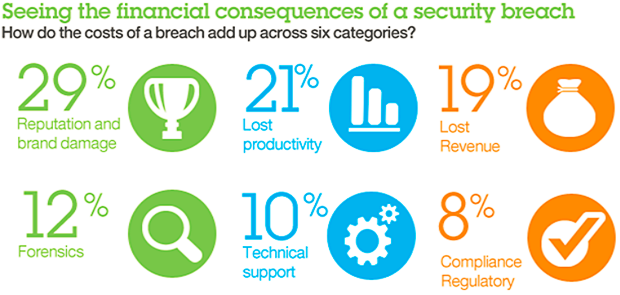

Improving Security by Green Computing Green computing is good for our environment, but if consumers stop for a second and count how many times a day we are not using or leave behind our devices on things such as tablets, laptops or even a desktop, we would be impressed. The importance behind this is not only about saving energy, but also thinking about the many risks there are by leaving devices with free access to personal information.  Information security is concerned with three main areas: 1. Confidentiality: information should be available only to those who rightfully have access to i 2. Integrity: information should be modified only by those who are authorized to do so 3. Availability: information should be accessible to those who need it when they need it These concepts apply to home Internet users just as much as they would to any corporate or government network. You probably wouldn’t let a stranger look through your important documents. In the same way, you may want to keep the tasks you perform on your computer confidential, whether it’s tracking your investments or sending email messages to family and friends. Also, you should have some assurance that the information you enter into your computer remains intact and is available when you need it. Antivirus Software That Can Help With Your Security Needs:
 | Security Risks and Safeguards: Risks: A risk is a vulnerability that could allow loss of confidentiality, integrity, or availability of computer services and where there is a possibility of the vulnerability being exploited. There are many things that are considered to be computer security risks. The foremost risk would probably come from malicious code like Viruses, Spyware, and Trojan horses. These can be infected on a system or number of systems through exploits in operating system software or web browsing software. Also, a common trend is a technique known as "phishing" where a spammer will send an email that looks like its from someone else and by clicking on a link/opening an attachment you may be downloading malware. Some forms of malware can "phone home" back to the attacker which is how bot-nets are created which can be used to take down entire websites or be used as a launchpad to send lots of spam. The biggest computer security risk is actually the user behind the computer in most cases. That is why it is important to practice safe internet habits and keep virus protection up to date. Safeguards:Firewall hardware can protect an outside hacker's access to a personal computer. Firewall hardware is firewall network used by many people to protect unauthorized access. Firewall hardware is set up between a computer and DSL modem which protects a single and multiple computers. An individual should regularly scan their own computer to prevent spyware. It may affect the performance of one person's computer. An individual should use password and encrypting files to protect themselves. This ensures that unauthorized people cannot access and view their data. It is common that everyone needs software to protect their data. As a result, an individual should maintain an antivirus software and firewall to protect their personal and financial data. Antivirus software works by preventing an unauthorized person from installing a virus into your computer and stealing private and confidential information.  |
{kind=link}